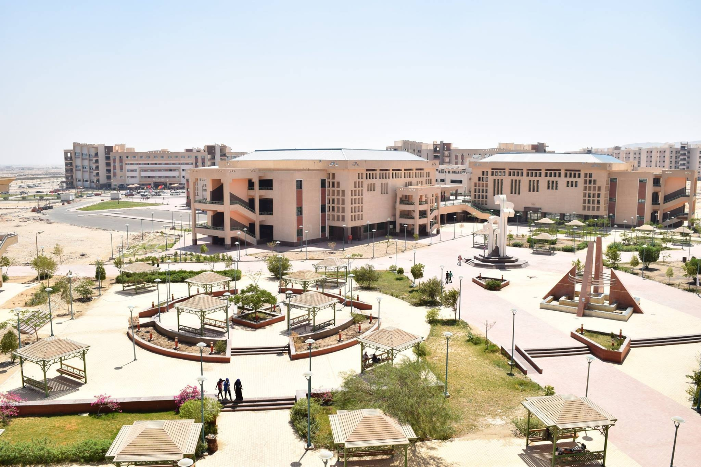
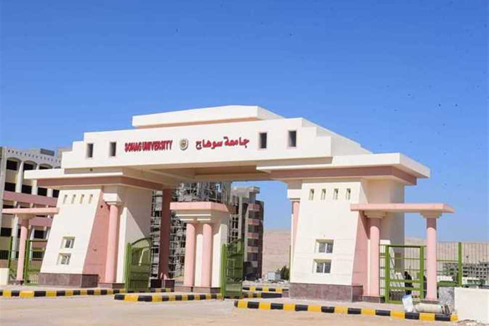

الجامعة تحرص على تكريم المجتهدين ولإبراز النماذج المثالية التي يمكن أن تكون قدوة لغيرهم من الطلاب
رؤية الجامعة
تسعي جامعة سوهاج للريادة في مجالات التعليم والبحث العلمي وخدمة المجتمع في ضوء منظومة داعمة للابتكار وانتاج المعرفة والتنمية المستدامة علي المستوي المحلي والدولي.

رسالة الجامعة
تلتزم جامعة سوهاج بتقديم برامج تعليمية متميزة لإعداد خريجين قادرين علي المنافسة في سوق العمل وأبحاث علمية تنافسية للإرتقاء بمكانة الجامعة عالميا وتقديم خدمات مجتمعية داعمة للتنمية المستدامه في ضوء قيم المجتمع ورؤية مصر 2030

من أهداف الجامعة
تطوير البرامج الدراسية القائمة و إتاحة برامج دراسية جديدة تخدم المجتمع المحيط و تواكب التطورات على الساحتين الإقليمية و العالمية لإعداد خريج متميز يلبي إحتياجات سوق العمل
تنظيم الوقت من المهارات الأساسية التي يمكن أن تساعد في تحقيق الأهداف وزيادة الإنتاجية.
هناك العديد من الطرق الفعالة لتنظيم الوقت، وفيما يلي بعض الأساليب الموصى بها:
1. **تحديد الأهداف**:
- حدد أهدافك طويلة وقصيرة المدى.
- استخدم تقنية SMART (محدد، قابل للقياس، قابل للتحقيق، واقعي، محدد زمنيًا) لتوضيح أهدافك.
2. **إعداد قائمة مهام (To-Do List)**:
- قم بإعداد قائمة مهام يومية أو أسبوعية.
- حدد أولويات المهام بناءً على الأهمية والعاجلة.
3. **تقنية بومودورو**:
- استخدم تقنية بومودورو للعمل في فترات زمنية قصيرة (عادة 25 دقيقة) تليها فترة راحة قصيرة (5 دقائق).
- بعد أربع دورات بومودورو، خذ استراحة أطول (15-30 دقيقة).
4. **الجدولة والتخطيط**:
- استخدم تقاويم ورقية أو رقمية لتخطيط وقتك.
- خصص وقتًا محددًا لكل مهمة أو نشاط.
5. **إدارة الوقت بواسطة الأولويات**:
- استخدم مبدأ "أيزنهاور" لتصنيف المهام إلى أربع فئات: عاجل ومهم، مهم ولكن غير عاجل، عاجل
ولكن غير مهم، وغير عاجل وغير مهم.
- ركز على المهام التي تكون مهمة ولكن غير عاجلة لتجنب التوتر.
6. **التخلص من المشتتات**:
- حدد مصادر المشتتات المحتملة وقلل منها.
- خصص بيئة عمل مناسبة تساعدك على التركيز.
7. **إعداد وقت للراحة والأنشطة الشخصية**:
- تأكد من تخصيص وقت للراحة والأنشطة الترفيهية.
- الراحة تساعد في تجديد النشاط وزيادة الإنتاجية.
8. **التقييم والمراجعة**:
- قم بمراجعة مدى تقدمك بانتظام.
- قم بتقييم أدائك وتعديل خططك إذا لزم الأمر.
9. **تعلم كيفية قول "لا"**:
- لا تتردد في رفض الطلبات أو الأنشطة التي قد تؤثر على جدولك الزمني وأهدافك.
10. **استخدام أدوات التكنولوجيا**:
- استفد من تطبيقات إدارة الوقت مثل Trello، Asana، أو Todoist لتنظيم المهام وتتبّع التقدم.
تطبيق هذه الأساليب يمكن أن يساعد في تحسين كيفية إدارة وقتك وزيادة إنتاجيتك بشكل عام.
تتطور أساليب المذاكرة باستمرار مع تقدم التكنولوجيا وفهمنا لكيفية تعلم الإنسان بشكل أفضل.
إليك بعض الطرق الحديثة التي يمكن أن تساعدك في المذاكرة بشكل أكثر فعالية:
1. **التعلم النشط**:
- **التفاعل مع المحتوى**: بدلاً من القراءة فقط، حاول تلخيص المعلومات بكلماتك الخاصة، أو استخدم أساليب مثل إنشاء
الرسوم البيانية أو الخرائط الذهنية.
- **التدريس للآخرين**: حاول شرح الموضوع لشخص آخر أو حتى لنفسك بصوت عالٍ. هذه الطريقة تعزز فهمك وتذكرك للمعلومات.
2. **التقنيات الرقمية**:
- **تطبيقات المذاكرة**: استخدم تطبيقات مثل Anki أو Quizlet لإنشاء بطاقات ذاكرة (flashcards)
واختبارات ذاتية لتحسين الذاكرة.
- **الموارد عبر الإنترنت**: استفد من دورات تعليمية على الإنترنت، فيديوهات تعليمية على YouTube،
وMOOCs (الدورات المفتوحة عبر الإنترنت) لتعزيز فهمك.
3. **تقنيات إدارة الوقت**:
- **تقنية بومودورو**: كما ذكرت سابقًا، قم بتقسيم وقت المذاكرة إلى فترات قصيرة مع
استراحات منتظمة لتحسين التركيز.
- **تقنية "المراجعة المتباعدة"**: استعرض المعلومات على فترات زمنية متباعدة لتعزيز الاحتفاظ بالمعلومات
على المدى الطويل.
4. **تخصيص مكان مخصص للدراسة**:
- **بيئة دراسية مريحة**: اختر مكانًا هادئًا ومنظمًا للدراسة،
وتأكد من خلوه من المشتتات.
- **استخدام أدوات الدراسة الحديثة**: مثل السبورات البيضاء الرقمية أو التطبيقات التي
تساعد في تنظيم الملاحظات.
5. **التفاعل مع المحتوى عبر الألعاب**:
- **الألعاب التعليمية**: استخدم الألعاب التي تعزز التعلم والمراجعة بأسلوب ممتع، مثل الألعاب التي تركز على حل
الألغاز أو التحديات التعليمية.
6. **التعلم التعاوني**:
- **المجموعات الدراسية**: انضم إلى مجموعات دراسية أو منصات تعليمية عبر الإنترنت حيث يمكنك تبادل
الأفكار والمناقشات مع زملائك.
- **المنتديات التعليمية**: شارك في منتديات تعليمية للحصول على
دعم إضافي وحل الأسئلة.
7. **تقنيات الذاكرة المتقدمة**:
- **الربط بين المعلومات**: استخدم تقنيات الربط مثل القصص أو التشبيهات لربط المعلومات
الجديدة بما تعرفه بالفعل.
- **التصور العقلي**: قم بتصور المعلومات أو المفاهيم بشكل بصري أو ملموس لزيادة فهمك
واحتفاظك بالمعلومات.
8. **استخدام الذكاء الاصطناعي**:
- **مساعدات الذكاء الاصطناعي**: استفد من أدوات الذكاء الاصطناعي لتحليل نصوص أو توفير تفسيرات
إضافية لمحتوى الدراسة.
9. **تحسين أسلوب التعلم الشخصي**:
- **تقييم استراتيجيات التعلم**: جرب أساليب مختلفة لتحديد الأسلوب الذي يناسبك بشكل أفضل، مثل
التعلم البصري، السمعي، أو الحركي.
- **تعديل تقنياتك بناءً على النتائج**: استمر في تقييم وتحسين أساليبك بناءً
على ما يحقق أفضل النتائج.
تجربة مزيج من هذه الأساليب يمكن أن تساعدك في العثور على الطريقة التي تعمل بشكل أفضل لك
، مما يعزز تجربتك الدراسية بشكل عام.
تحديد الأهداف هو عملية حيوية تُعتبر أساسًا لتحقيق النجاح والتطور الشخصي. سواء كنت تسعى لتحقيق نجاح مهني،
تحسين صحة بدنية، أو تعزيز مهاراتك الشخصية، فإن تحديد الأهداف بوضوح يمكن
أن يساعدك على الوصول إلى هذه الأهداف بشكل أكثر فعالية.
### مفهوم تحديد الأهداف
تحديد الأهداف هو عملية تحديد ما تريد تحقيقه في فترة زمنية معينة. يشمل ذلك تحديد ما تود الوصول إليه، ومتى، وكيف.
تتطلب هذه العملية تحديد أهداف واضحة وقابلة للقياس، مما يساعد في بناء خطة عمل واضحة لتحقيقها.
### أهمية تحديد الأهداف
1. **وضوح الرؤية**: تحديد الأهداف يوفر لك رؤية واضحة لما تود تحقيقه، مما يساعد في توجيه جهودك ومواردك بشكل فعال.
2. **تحفيز الذات**: الأهداف تحدد معالم النجاح وتحفزك للاستمرار في السعي نحو تحقيقها. الشعور بالتقدم
والإنجاز يعزز الدافع الشخصي.
3. **تحسين التركيز**: من خلال تحديد الأهداف، يمكنك التركيز على ما هو مهم وتجنب التشتت. هذا يساعد في
إدارة الوقت بشكل أكثر كفاءة.
4. **تقييم الأداء**: الأهداف القابلة للقياس تساعدك على تقييم تقدمك وتعديل استراتيجياتك إذا لزم الأمر.
### خطوات تحديد الأهداف بفعالية
1. **تحديد الأهداف SMART**:
- **محدد**: يجب أن يكون الهدف واضحًا ومحددًا. بدلاً من "أريد أن أكون أكثر لياقة"، يمكنك تحديد "أريد أن
أخسر 5 كيلوغرامات في ثلاثة أشهر".
- **قابل للقياس**: تأكد من أنه يمكنك قياس تقدمك نحو تحقيق الهدف. في المثال السابق، الوزن المطلوب
خسارته هو معيار قابل للقياس.
- **قابل للتحقيق**: تأكد من أن الهدف واقعي وقابل للتحقيق. وضع أهداف طموحة للغاية قد يكون محبطًا
إذا لم تتمكن من تحقيقها.
- **ذي صلة**: يجب أن يكون الهدف مرتبطًا بأهدافك العامة وقيمك الشخصية.
- **محدد بوقت**: حدد إطارًا زمنيًا لتحقيق الهدف، مثل "سأحقق هذا الهدف خلال الثلاثة أشهر القادمة".
2. **تحديد الإجراءات اللازمة**: حدد الخطوات التي تحتاج إلى اتخاذها لتحقيق هدفك. قم بتقسيم الهدف إلى مهام أصغر،
وقم بوضع جدول زمني لتنفيذها.
3. **تتبع التقدم والتقييم**: قم بمتابعة تقدمك بانتظام. هذا سيساعدك على معرفة ما إذا كنت تسير على المسار الصحيح
أو تحتاج إلى تعديل خطتك.
4. **التكيف مع التحديات**: كن مستعدًا لمواجهة التحديات والعقبات. تعديل استراتيجياتك
وتغيير خططك عند الحاجة يمكن أن يساعدك في
الاستمرار نحو تحقيق أهدافك.
### الخلاصة
تحديد الأهداف هو عنصر أساسي في النجاح والتطور الشخصي. من خلال تحديد أهداف واضحة وقابلة للقياس، ووضع خطة عمل فعالة،
يمكنك تحسين تركيزك، وزيادة دافعك، وتحقيق النجاح في مختلف جوانب حياتك. تذكر أن العملية لا تنتهي عند تحديد
الأهداف فقط، بل تشمل أيضًا متابعة التقدم والتكيف مع التحديات للوصول إلى النجاح المنشود.
**أهمية التمارين الرياضية: مفتاح الصحة والعافية**
التمارين الرياضية ليست مجرد نشاط بدني؛ بل هي جزء أساسي من نمط الحياة الصحي تسهم بشكل كبير في تحسين جودة
الحياة وتعزيز الرفاهية العامة. بغض النظر عن العمر أو مستوى اللياقة البدنية، فإن دمج التمارين في
الروتين اليومي يمكن أن يؤدي إلى فوائد صحية كبيرة، تشمل الجوانب الجسدية والنفسية والاجتماعية.
### فوائد التمارين الرياضية
#### 1. **تحسين الصحة البدنية**
- **تعزيز القلب والأوعية الدموية**: تساهم التمارين الرياضية المنتظمة في تحسين كفاءة القلب والأوعية الدموية.
يساعد النشاط البدني في تقليل خطر الإصابة بأمراض القلب والشرايين، مثل ارتفاع ضغط الدم والنوبات القلبية.
- **تقوية العضلات والعظام**: تعمل التمارين على تقوية العضلات والعظام، مما يقلل من خطر الإصابة بهشاشة
العظام ويعزز القوة البدنية والمرونة.
- **إدارة الوزن**: تساعد التمارين الرياضية في حرق السعرات الحرارية والحفاظ على وزن صحي. تعتبر الرياضة جزءاً
أساسياً من استراتيجيات فقدان الوزن والوقاية من السمنة.
#### 2. **تحسين الصحة النفسية**
- **تقليل التوتر والقلق**: تسهم التمارين الرياضية في إفراز هرمونات السعادة مثل الإندورفين،
مما يساعد في تقليل مشاعر التوتر والقلق والاكتئاب.
- **تعزيز المزاج والثقة بالنفس**: يشعر الكثيرون بعد ممارسة الرياضة بارتفاع في مستويات الطاقة وتحسن في المزاج
، مما يعزز الثقة بالنفس والشعور بالرفاهية.
#### 3. **تحسين النوم**
تساعد التمارين الرياضية في تنظيم نمط النوم وتعزيز جودته. يمكن أن يؤدي النشاط البدني إلى تحسين مدة النوم وكفاءته
، مما يساعد في الشعور بالانتعاش والحيوية خلال النهار.
#### 4. **تعزيز القدرات العقلية**
- **تحسين الذاكرة والتركيز**: تشير الدراسات إلى أن النشاط البدني يمكن أن يحسن الذاكرة والتركيز، ويساهم
في تعزيز القدرات العقلية بشكل عام.
- **التأخير في ظهور الأمراض العصبية**: قد تساهم التمارين الرياضية في تأخير ظهور الأمراض العصبية مثل
الزهايمر وتخفيف الأعراض لدى المصابين.
#### 5. **تحسين التفاعل الاجتماعي**
- **الفرص الاجتماعية**: المشاركة في الأنشطة الرياضية الجماعية توفر فرصاً للتواصل والتفاعل مع الآخرين، مما يعزز
الروابط الاجتماعية ويخلق شعوراً بالانتماء.
- **تعزيز الروح الرياضية**: تسهم الرياضة في تنمية روح الفريق والعمل الجماعي، مما يمكن أن يكون له تأثير
إيجابي على العلاقات الاجتماعية والمهنية.
### كيفية دمج التمارين الرياضية في الحياة اليومية
1. **اختيار الأنشطة المفضلة**: ابحث عن الأنشطة التي تستمتع بها، سواء كانت المشي، الجري، السباحة، أو ممارسة
اليوغا. اختيار الأنشطة التي تحبها يزيد من احتمالية الالتزام.
2. **وضع جدول زمني**: قم بتخصيص وقت محدد للتمارين الرياضية في جدولك اليومي. حتى بضع دقائق
من النشاط البدني يومياً يمكن أن تكون مفيدة.
3. **تحديد أهداف واقعية**: ضع أهدافاً صغيرة وقابلة للتحقيق لزيادة الدافع والاستمرار
في ممارسة التمارين الرياضية.
4. **التمارين مع الأصدقاء**: ممارسة الرياضة مع الأصدقاء أو الانضمام إلى مجموعة رياضية يمكن
أن يجعل التمارين أكثر متعة وتحفيزاً.
### الخلاصة
تعتبر التمارين الرياضية أحد أعمدة الصحة الجيدة والعافية العامة. من خلال تحسين الصحة البدنية والنفسية والاجتماعية،
تلعب التمارين دوراً أساسياً في تعزيز نوعية الحياة. إن دمج النشاط البدني بانتظام في الروتين اليومي
يمكن أن يكون له تأثيرات إيجابية كبيرة، مما يجعله جزءاً لا غنى عنه في حياتنا الصحية.
البحث عن المعلومات أصبح جزءًا أساسيًا من حياتنا اليومية، سواء كان ذلك لأغراض الدراسة
أو العمل أو حتى الفضول الشخصي.للحصول على معلومات دقيقة وموثوقة، يجب اتباع أفضل
الممارسات والطرق الفعّالة.هنا مقال يوضح بعض أفضل الطرق للبحث عن المعلومات:
### 1. **استخدام محركات البحث بكفاءة**
- **استخدام الكلمات الرئيسية المناسبة**: عند البحث عن معلومات، يجب اختيار الكلمات الرئيسية
بعناية لتعكس الموضوع الذي تبحث عنه بدقة.
- **استخدام علامات الاقتباس**: وضع العبارات بين علامات الاقتباس (" ") يمكن أن يساعد في العثور على نتائج تطابق
العبارة كاملة، وليس فقط الكلمات الفردية.
- **تحديد نطاق البحث**: يمكن تحديد نطاق البحث باستخدام أدوات متاحة في محركات البحث، مثل تحديد التاريخ
أو البلد أو نوع الملف.
### 2. **الاستفادة من قواعد البيانات الأكاديمية**
- **الوصول إلى المصادر العلمية الموثوقة**: قواعد البيانات الأكاديمية مثل Google Scholar، JSTOR،
وPubMed تحتوي على مقالات بحثية، أوراق علمية، وكتب موثوقة.
- **استخدام المكتبات الإلكترونية**: الجامعات والمؤسسات البحثية توفر غالباً وصولاً إلى قواعد بيانات مدفوعة يمكن أن
تكون مصادر قيمة للمعلومات المتعمقة.
### 3. **التأكد من موثوقية المصادر**
- **التحقق من مصداقية الكاتب أو الناشر**: من الضروري معرفة الخلفية الأكاديمية أو المهنية للكاتب،
وكذلك معرفة سمعة الموقع أو الدورية التي تنشر المعلومات.
- **مراجعة تواريخ النشر**: تأكد من أن المعلومات حديثة وذات صلة. في بعض المجالات، يمكن أن تصبح المعلومات قديمة بسرعة.
### 4. **استخدام أدوات البحث المتقدم**
- **فلترة النتائج**: تقدم محركات البحث خيارات لتصفية النتائج بحسب النوع (مقالات، صور، أخبار)، أو اللغة، أو التاريخ.
- **استخدام مشغل البحث بولياني**: مشغل البحث بولياني مثل AND، OR، NOT يمكن أن يساعد في تضييق أو توسيع نطاق البحث.
### 5. **الاستفادة من وسائل التواصل الاجتماعي والمجتمعات الرقمية**
- **متابعة الخبراء والمختصين**: العديد من الخبراء والمختصين يشاركون معلومات قيمة عبر حساباتهم
على وسائل التواصل الاجتماعي.
- **المشاركة في المنتديات والمجتمعات الرقمية**: مواقع مثل Reddit و Quora يمكن أن تكون مصادر جيدة للمعلومات
إذا تم استخدامها بحذر.
### 6. **التفكير النقدي وتقييم المعلومات**
- **تحليل الحجج والبراهين**: يجب تقييم الحجج المقدمة في المقالات والمصادر للتأكد من أنها
مبنية على أدلة قوية وليست مجرد آراء.
- **البحث عن المراجع**: المقالات والمصادر الجيدة تحتوي عادةً على مراجع لمصادر أخرى يمكن التحقق منها.
### 7. **استخدام التطبيقات والأدوات المتخصصة**
- **برامج إدارة المراجع**: أدوات مثل Zotero و EndNote تساعد في تنظيم المصادر والمراجع المستخدمة في البحث.
- **أدوات البحث المتخصصة**: هناك أدوات تساعد في البحث داخل مجالات معينة مثل الطب أو التكنولوجيا،
وهي توفر نتائج أكثر دقة وملاءمة.
### 8. **التعلم المستمر**
- **حضور ورش العمل والدورات**: العديد من المؤسسات تقدم دورات وورش عمل حول كيفية البحث عن المعلومات بفعالية.
- **قراءة المدونات والمقالات**: متابعة المدونات والمقالات التي تتحدث عن مهارات البحث يمكن أن تساعد في تطوير مهاراتك.
### الخاتمة
البحث عن المعلومات يحتاج إلى مزيج من المهارات التقنية والنقدية. باستخدام الأدوات والتقنيات المناسبة،
يمكن تحسين جودة ودقة المعلومات المستخلصة، مما يسهم في تحقيق الأهداف البحثية بشكل أكثر فعالية.